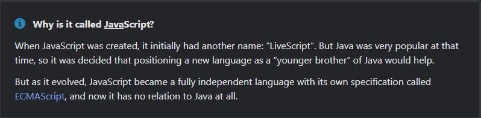
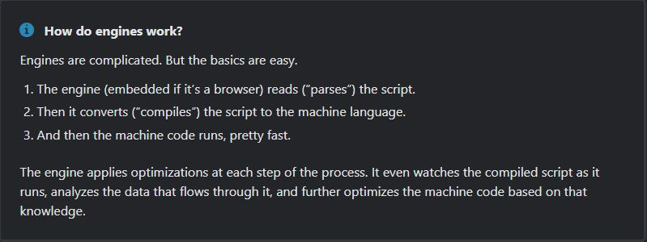
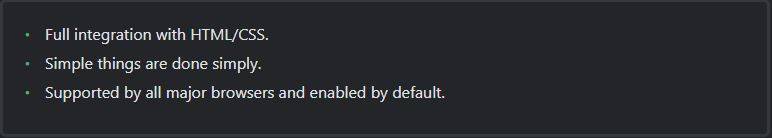

Syntax and Basic Construct
An Introduction to JavaScript
Let's see what's so special about JavaScript, what we can achieve with it, and what other technologies play well with it.
What is JavaScript?
JavaScript was initially created to “make web pages alive”. The programs in this language are called scripts. They can be written right in a web page's HTML and run automatically as the page loads. Scripts are provided and executed as plain text. They don't need special preparation or compilation to run. In this aspect, JavaScript is very different from another language called Java.
Today, JavaScript can execute not only in the browser, but also on the server, or actually on any device that has a special program called the JavaScript engine.
Different engines have different “codenames”. For example:
- V8 - in Chrome, Opera and Edge.
- SpiderMonkey - in Firefox.
- …There are other codenames like “Chakra” for IE, “JavaScriptCore”, “Nitro” and “SquirrelFish” for Safari, etc.
The terms above are good to remember because they are used in developer articles on the internet. We’ll use them too. For instance, if “a feature X is supported by V8”, then it probably works in Chrome, Opera and Edge.
What can in-browser Javascript do?
Modern JavaScript is a “safe” programming language. It does not provide low-level access to memory or CPU, because it was initially created for browsers which do not require it.
JavaScript's capabilities greatly depend on the environment it's running in. For instance, Node.js supports functions that allow JavaScript to read/write arbitrary files, perform network requests, etc.
In-browser JavaScript can do everything related to webpage manipulation, interaction with the user, and the webserver.
For instance, in-browser JavaScript is able to:
- Add new HTML to the page, change the existing content, modify styles.
- React to user actions, run on mouse clicks, pointer movements, key presses.
- Send requests over the network to remote servers, download and upload files (so-called AJAX and COMET technologies).
- Get and set cookies, ask questions to the visitor, show messages.
- Remember the data on the client-side (“local storage”).
What CAN'T in-browser JavaScript do?
JavaScript's abilities in the browser are limited for the sake of a user's safety. The aim is to prevent an evil webpage from accessing private information or harming the user’s data.
Examples of such restrictions include:
- JavaScript on a webpage may not read/write arbitrary files on the hard disk, copy them or execute programs. It has no direct access to OS functions.
Modern browsers allow it to work with files, but the access is limited and only provided if the user does certain actions, like “dropping” a file into a browser window or selecting it via an input tag.
There are ways to interact with camera/microphone and other devices, but they require a user’s explicit permission. So a JavaScript-enabled page may not sneakily enable a web-camera, observe the surroundings and send the information to the NSA. - Different tabs/windows generally do not know about each other. Sometimes they do, for example when one window uses JavaScript to open the other one. But even in this case, JavaScript from one page may not access the other if they come from different sites (from a different domain, protocol or port).
This is called the “Same Origin Policy”. To work around that, both pages must agree for data exchange and contain a special JavaScript code that handles it. We’ll cover that in the tutorial.
This limitation is, again, for the user’s safety. A page from http://anysite.com which a user has opened must not be able to access another browser tab with the URL http://gmail.com and steal information from there. - JavaScript can easily communicate over the net to the server where the current page came from. But its ability to receive data from other sites/domains is crippled. Though possible, it requires explicit agreement (expressed in HTTP headers) from the remote side. Once again, that’s a safety limitation.
Such limits do not exist if JavaScript is used outside of the browser, for example on a server. Modern browsers also allow plugin/extensions which may ask for extended permissions.
What makes JavaScript Unique?
There are atleast three great things about Javascript?
JavaScript is the only browser technology that combines these three things.
That's what makes JavaScript unique. That's why it's the most widespread tool for creating browser interfaces.
That said, JavaScript also allows to create servers, mobile applications, etc.
Languages “over” JavaScript
The syntax of JavaScript does not suit everyone's needs. Different people want different features.
That's to be expected, because projects and requirements are different for everyone.
So recently a plethora of new languages appeared, which are transpiled (converted) to JavaScript before they run in the browser.
Modern tools make the transpilation very fast and transparent, actually allowing developers to code in another language and auto-converting it “under the hood”.
Examples of such languages:
- CoffeeScript is a “syntactic sugar” for JavaScript. It introduces shorter syntax, allowing us to write clearer and more precise code. Usually, Ruby devs like it.
- TypeScript is concentrated on adding “strict data typing” to simplify the development and support of complex systems. It is developed by Microsoft.
- Flow also adds data typing, but in a different way. Developed by Facebook.
- Dart is a standalone language that has its own engine that runs in non-browser environments (like mobile apps), but also can be transpiled to JavaScript. Developed by Google.
- Brython is a Python transpiler to JavaScript that enables the writing of applications in pure Python without JavaScript.
- Kotlin is a modern, concise and safe programming language that can target the browser or Node.